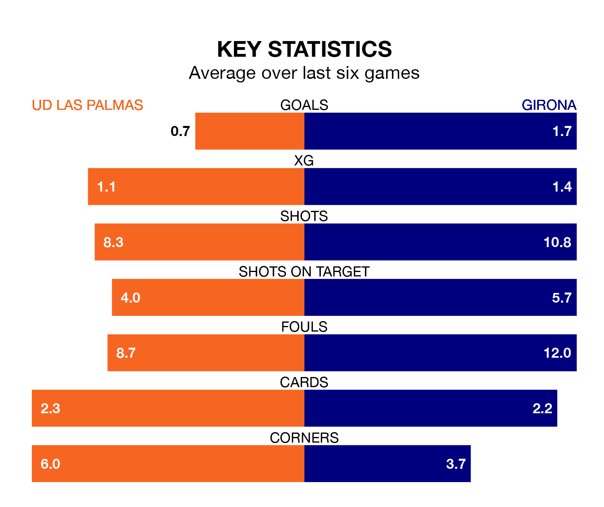

Girona are strong favourites to take all three points despite UD Las Palmas's home advantage in Saturday lunchtime's match at Estadio de Gran Canaria.
*Betting Company* are offering odds of 1.83 on Girona sealing the win, with the visitors sitting third in La Liga table.
Las Palmas, who are 13th in the league and 31 points behind Girona, are priced at 3.51 to win. A draw is set at 3.63.
Las Palmas are in terrible form in La Liga, with no wins and a draw from their last six games.
With three wins and three losses over that period, Girona's form is much better – they have taken nine points from 18, compared to the home team's one.
With 67 goals in 32 games so far this season, the visitors are the league's second-highest scorers with 2.1 goals per game. And they are conceding fewer than average, letting in 40 goals at a rate of 1.2 per game.
Las Palmas, meanwhile, are below average scorers, with 0.9 goals per game, compared to a league average of 1.3. They have conceded 1.2 goals per game.
In Artem Dovbyk, Girona have the league's most on-form striker so far this season. He has notched 18 goals in 30 appearances.
His goal rate of one every 117 minutes is much quicker than that of Kirian Rodríguez, Las Palmas's top scorer with a goal every 446 minutes, and a total of six goals in 31 games.
In the last 10 years, Las Palmas and Girona have played each other on 11 occasions. Las Palmas won two of them, Girona six, and they drew three times.
On average, Las Palmas scored 0.7 goals and Girona 1.5 in those matches.
Their last meeting was on September 3, when Girona won 1-0 at home.
Las Palmas's last match was on April 20, a 4-1 loss against Celta de Vigo, with Juan Herzog getting the goal for Las Palmas.
Girona beat Cádiz 4-1 last time out, also on Saturday, with Dovbyk, Eric García and Iván Martín on the scoresheet.
Updated: 07:59 (UTC), 26/04/24